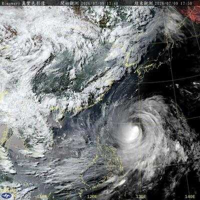
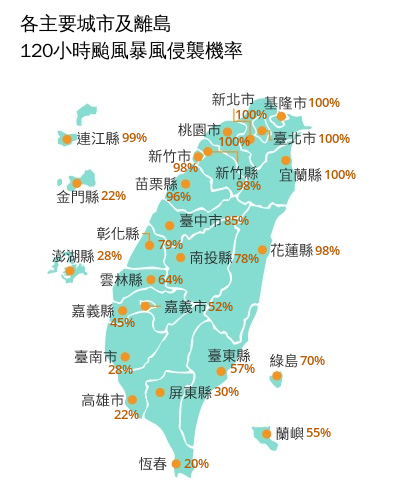

TAIWAN WEEKLY WEATHER
整理中央氣象署 7/9 傍晚資料，聚焦 7/10-7/16 的風雨時程、區域風險與門市/物流可用的行動建議。
TYPHOON STATUS

衛星雲圖顯示颱風雲系接近臺灣東方海面，外圍環流開始影響沿海風浪。
WEEK TIMELINE
北部、東北部陣雨或雷雨，局部大雨或豪雨；北部、東半部沿海、恆春、馬祖留意長浪。
氣象署與中央社均指向此段為主要影響期，北部、宜蘭、中部山區有豪雨以上機率。
多數地區仍有短暫陣雨或雷雨，山區及迎風面仍要防局部雨勢。
北部、宜蘭轉為多雲午後短暫雷陣雨；中南部及東部仍有短暫陣雨機率。
REGIONAL RISK
7-DAY CITY FORECAST
資料時間：中央氣象署 1 週預報，預報區間 07/10-07/16。
MARINE & WIND

暴風到達時間及機率圖。機率圖是決策參考，實際風雨仍需搭配警報單與風雨預報。
ACTION CHECKLIST
招牌、戶外展示物、倉庫門窗、排水孔先確認，避免等到 7/10 晚間風雨變大。
北部、東北部與山區配送保守估計；離島與海運航班以即時公告為準。
若颱風影響配送，主動說明「安全優先、依物流公告調整」，減少重複詢問。
停班停課、營業時間與同仁通勤安全依地方政府與公司公告處理。
SOURCE & NOTE
這份簡報是 2026/07/09 傍晚版本，颱風路徑與風雨預報會隨警報更新調整。實際營業、配送、停班停課與戶外活動，請以中央氣象署、地方政府與公司公告為準。